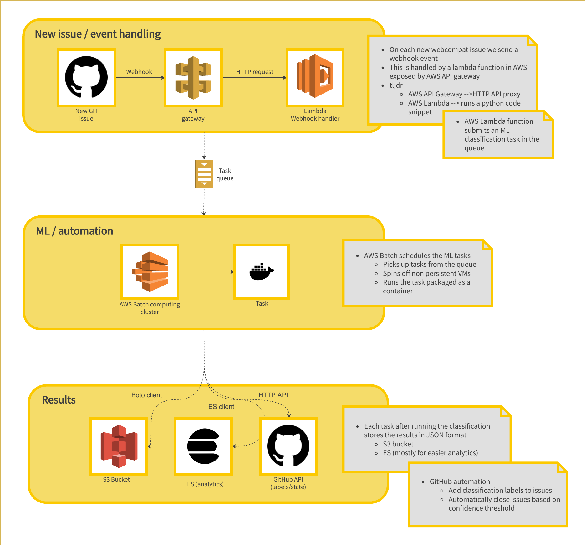
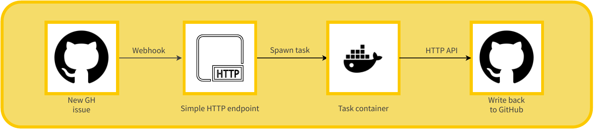

Deployment¶
Architecture diagram¶
Technology stack¶
Current deployment is using the following technologies
Docker
Package models and dependencies in a single container
Distribute docker images in Docker Hub
AWS
AWS Lambda
Handle GitHub web hooks
AWS API Gateway
Expose lambda handler as API
AWS Batch
Schedule
webcompat-mltasks
AWS S3
Store
webcompat-mltasks results
GitHub API / webhooks
Extract data to build datasets
Consume webhook events to trigger the automation
Even though most of the services are deployed in the cloud, all the primitives can be self hosted. The idea is that a webhook from GitHub triggers the automation and a simple HTTP API handles the request and spawns a task.
Infrastructure as Code¶
About¶
All the infrastructure is managed as code and the codebase lives under mozilla/webcompat-ml-deploy.
To avoid over-complicating things, terraform is maintained in the git repository encrypted using git-crypt.
Important
For each change maintainers should make sure that the state is also checked in the repository. The state also leaks credentials so its important to always make sure that the state is encrypted before pushing.
All ML tasks should be described as a Dockerfile under docker/ and should have the ML model prebundled.
Examples¶
Releasing a new task image
$ cd docker/needsdiagnosis
$ docker build . -t ml-task:needsdiagnosis --build-arg MODEL_PATH=<path_to_model>
$ docker tag ml-task:needsdiagnosis mozillawebcompat/ml-task:needsdiagnosis
$ docker push mozillawebcompat/ml-task:needsdiagnosis
Applying a terraform change
$ git-crypt unlock
$ terraform plan # to see what happens to the resources
$ terraform apply
$ git add .
$ git commit -m '<change applied>'